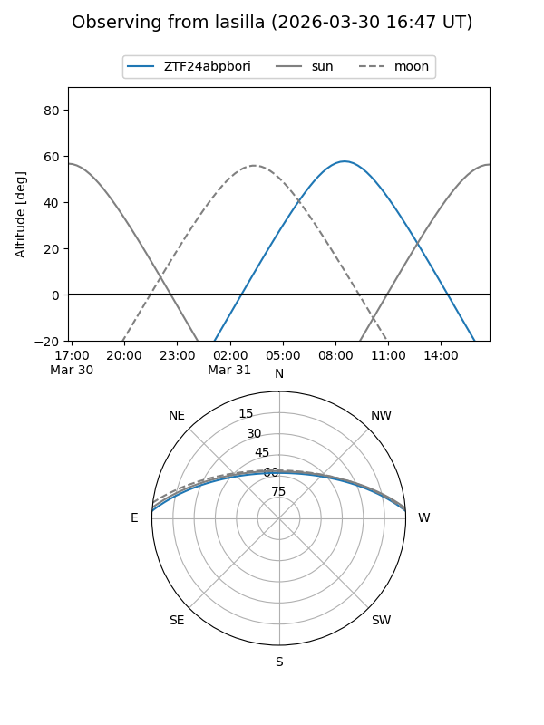
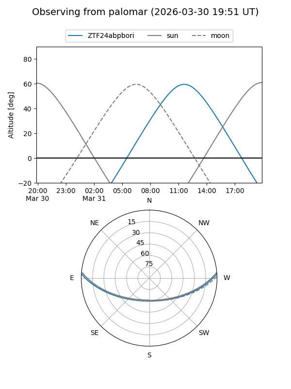
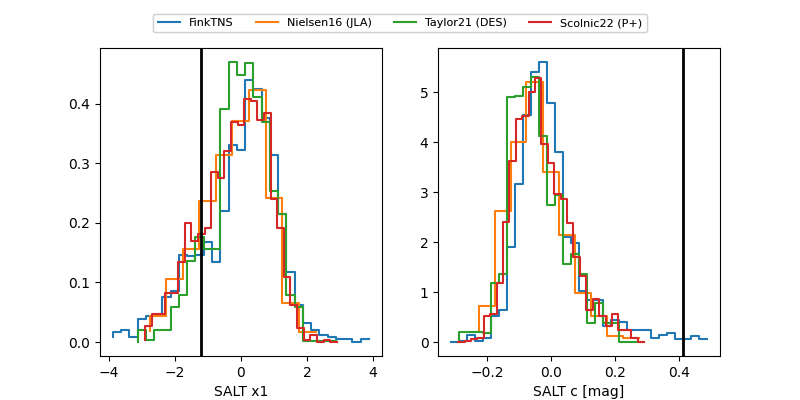

ZTF24abpbori
Target ZTF24abpbori at 2026-03-30 13:58
Aliases and brokers:
FINK: link
Lasair: link
ALeRCE: link
alt names
ZTF24abpbori (ztf,fink_ztf)
Coordinates:
equatorial (ra, dec) = 245.6262,+3.03626
equatorial (HMS+DMS) = 16:22:30.29,+03:02:10.53
galactic (l, b) = (16.9060,+34.18689)
Flags:
likely cv
Photometry:
last ztfg=16.37, ztfr=15.82
1 ztfg, 2 ztfr detections
Lightcurve
Visibility


Additional plots
